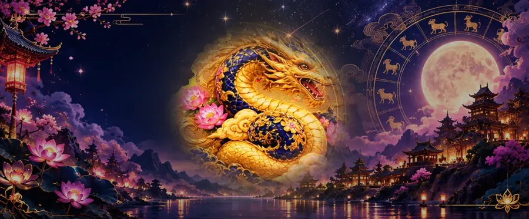

2027 Horoscope
Dragon Horoscope 2027: What the Fire Goat Year Means for the Dragon
2027, the Fire Goat year, is a neutral year for the Dragon: no special tie with the Goat in tradition. Big ambitions still have room, but the year is read as favouring care over force. Here is how the Dragon is read in 2027, what your birth element adds, and the months to watch.

The Dragon and the Goat year
In the rules our calculators use, the Dragon has no traditional relationship with the Goat: it is neither in the Goat's triangle (Rabbit, Goat and Pig) nor its opposite, the Ox. A neutral year leaves the Dragon's own strengths, confidence and ambition, to set the pace.
What changes is the mood. A Goat year is usually described as gentle and cooperative, and the Dragon's high standards can read as impatience to others. Sharing credit and slowing down to listen are the habits most likely to help plans land.
2027 is a Ding-wei year, according to the Hong Kong Observatory: Ding is a Fire stem and Wei is the Goat, so it is the year of the Fire Goat, from 6 February 2027 to 25 January 2028. These are cultural readings, not forecasts: no evidence shows a year's animal decides anyone's luck. Use them as a prompt to think about your own plans.
Your element in 2027: every Dragon year since 1940
Each Dragon year has its own element, set by the last digit of the year. In 2027 that element meets the year's Fire, and the five-element cycles describe how:
| Born | Year starts | Element | In 2027 | Your element and the year's Fire |
|---|---|---|---|---|
| 1940 | 8 February 1940 | Metal Dragon | turns 87 | Fire melts (or refines) Metal: the year works on your element |
| 1952 | 27 January 1952 | Water Dragon | turns 75 | Water dampens Fire: your element works on the year |
| 1964 | 13 February 1964 | Wood Dragon | turns 63 | Wood feeds Fire: your element feeds the year |
| 1976 | 31 January 1976 | Fire Dragon | turns 51 | Fire meets Fire: the same element as the year |
| 1988 | 17 February 1988 | Earth Dragon | turns 39 | Fire produces Earth: the year feeds your element |
| 2000 | 5 February 2000 | Metal Dragon | turns 27 | Fire melts (or refines) Metal: the year works on your element |
| 2012 | 23 January 2012 | Water Dragon | turns 15 | Water dampens Fire: your element works on the year |
| 2024 | 10 February 2024 | Wood Dragon | turns 3 | Wood feeds Fire: your element feeds the year |
In the five-element cycles, as Wikipedia sets them out, Wood feeds Fire, Fire produces Earth, Fire melts (or refines) Metal, and Water dampens (or regulates) Fire. These links are a traditional way of describing how each element meets the year, not a prediction.
Born in January or early February? The zodiac year starts at Chinese New Year, so check the start date in the table; if you were born before it, you belong to the sign before the Dragon. Our born in January guide and the zodiac checker explain.
Love and relationships for the Dragon
The Dragon's natural matches in our guide are the Rat and the Monkey, its triangle partners, and the Rooster. In love, a Goat year rewards attention to small, everyday things more than grand gestures. The Dog, the Dragon's opposite, is the pairing tradition marks as the hardest.
Work and money for the Dragon
Our guide links the Dragon with leadership, entrepreneurship, entertainment and real estate. 2027 can still be a year of big projects, but ones built with partners rather than pushed through alone. With money, the Dragon's confidence works best with a second opinion on large decisions.
Months to watch in 2027
Each zodiac year is also divided into twelve zodiac months. Each one starts at a solar term rather than at the new moon, beginning with the Tiger month at Spring Commences (Lichun) on 4 February 2027. The dates below are the 2027 solar terms, calculated for Beijing time; they can differ by a day in other time zones.
| Month | 2027 dates | For the Dragon |
|---|---|---|
| Tiger | 4 Feb – 5 Mar | |
| Rabbit | 6 Mar – 4 Apr | |
| Dragon | 5 Apr – 5 May | Your own month |
| Snake | 6 May – 5 Jun | |
| Horse | 6 Jun – 6 Jul | |
| Goat | 7 Jul – 7 Aug | |
| Monkey | 8 Aug – 7 Sep | Triangle month: traditionally smoother |
| Rooster | 8 Sep – 7 Oct | |
| Dog | 8 Oct – 6 Nov | Clash month: take extra care |
| Pig | 7 Nov – 6 Dec | |
| Rat | 7 Dec – 5 Jan 2028 | Triangle month: traditionally smoother |
| Ox | 6 Jan 2028 – 3 Feb 2028 |
Read with the same rules as the year, the months of your triangle partners, the Rat (7 Dec – 5 Jan 2028) and the Monkey (8 Aug – 7 Sep), are traditionally the smoother ones for the Dragon, and the month of your opposite sign, the Dog (8 Oct – 6 Nov), is the one to take extra care in.
Lucky colors, numbers and days for the Dragon
In our Dragon guide, the Dragon's lucky colors are gold, silver, gray, its lucky numbers are 1, 6, 7, and its lucky days are Tuesday and Saturday. For the full profile, read the Year of the Dragon guide; for every sign in 2027, see the 2027 predictions.
Frequently asked questions
Is 2027 a good year for the Dragon?
In tradition it is a neutral year: the Dragon has no special relationship with the Goat, so the year is read as shaped more by your own choices.
What is the Dragon's clash month in 2027?
The Dog month, from 8 Oct to 6 Nov 2027. The Dog is the Dragon's opposite sign, and tradition marks its month as the one to take extra care in.
What element is my Dragon year?
It depends on the year you were born: 1940 is a Metal Dragon; 1952 is a Water Dragon; 1964 is a Wood Dragon; 1976 is a Fire Dragon; 1988 is an Earth Dragon; 2000 is a Metal Dragon; 2012 is a Water Dragon; 2024 is a Wood Dragon.
What are the Dragon's lucky colors and numbers?
In our Dragon guide: colors gold, silver, gray; numbers 1, 6, 7; days Tuesday and Saturday.
Sources and further reading
- Hong Kong Observatory: Gregorian-Lunar Calendar Conversion Table of 2027 — 6 February 2027 as the first day of the Ding-wei year of the Goat, and Spring Commences (Lichun) on 4 February 2027.
- Wikipedia: “Wuxing (Chinese philosophy)” — the generating and overcoming cycles of the five elements, Ding as a Fire stem, and the element of each year by its last digit.
- Wikipedia: “Solar term” — the twelve zodiac months, from the Tiger month at Lichun to the Ox month at Xiaohan, each starting at a jie solar term.
- Chinese Idioms: “Chinese Zodiac Compatibility: The Trines, the Clashes, and Your Best Match” (15 July 2026) — the four triangles of compatible signs and the six clashing pairs.
Readings follow the same rules as this site's calculators; year start dates come from the Lunar New Year table used by our zodiac checker. The zodiac is shared as culture and tradition, not as a prediction.
Explore more: 2027 predictions for every sign · Year of the Dragon guide · Chinese New Year 2027 · Compatibility calculator
← Back to the MyBirthSign Blogជោគជតារាសីឆ្នាំ 2027
ជោគជតារាសីរោង ឆ្នាំ 2027៖ ឆ្នាំមមែ ធាតុភ្លើង មានន័យយ៉ាងណាចំពោះអ្នកកើតឆ្នាំរោង
ឆ្នាំ 2027 ដែលជាឆ្នាំមមែ ធាតុភ្លើង ជាឆ្នាំអព្យាក្រឹតសម្រាប់អ្នកកើតឆ្នាំរោង៖ តាមប្រពៃណី រោងគ្មានចំណងពិសេសជាមួយមមែទេ។ មហិច្ឆតាធំៗនៅតែមានកន្លែង ប៉ុន្តែគេបកស្រាយថា ឆ្នាំនេះពេញចិត្តនឹងការយកចិត្តទុកដាក់ ជាងការប្រើកម្លាំង។ ខាងក្រោមនេះជាការបកស្រាយរាសីរោងក្នុងឆ្នាំ 2027 អ្វីដែលធាតុកំណើតរបស់អ្នកនាំមកបន្ថែម និងខែដែលគួរយកចិត្តទុកដាក់។
រាសីរោង និងឆ្នាំមមែ
តាមច្បាប់ដែលកម្មវិធីគណនារបស់យើងប្រើ រោងគ្មានទំនាក់ទំនងតាមប្រពៃណីជាមួយមមែទេ៖ រោងមិនស្ថិតក្នុងត្រីកោណរបស់មមែ (ថោះ មមែ និងកុរ) ហើយក៏មិនមែនជារាសីទល់មុខមមែ ដែលគឺឆ្លូវដែរ។ ឆ្នាំអព្យាក្រឹតទុកឱ្យចំណុចខ្លាំងរបស់រោងផ្ទាល់ គឺទំនុកចិត្តលើខ្លួនឯង និងមហិច្ឆតា ជាអ្នកកំណត់ចង្វាក់។
អ្វីដែលផ្លាស់ប្ដូរ គឺបរិយាកាស។ ជាធម្មតា ឆ្នាំមមែត្រូវបានពិពណ៌នាថា ទន់ភ្លន់ និងចូលចិត្តសហការ ហើយស្តង់ដារខ្ពស់របស់រោង អាចមើលទៅដូចជាការមិនសូវអត់ធ្មត់ នៅក្នុងភ្នែកអ្នកដទៃ។ ការចែករំលែកកិត្តិយសនៃជោគជ័យ និងការបន្ថយល្បឿនដើម្បីស្ដាប់ គឺជាទម្លាប់ដែលទំនងជាជួយឱ្យផែនការសម្រេចបានជាងគេ។
យោងតាម Hong Kong Observatory ឆ្នាំ 2027 ជាឆ្នាំ Ding-wei៖ Ding ជាដើមមេឃធាតុភ្លើង ហើយ Wei គឺមមែ ដូច្នេះវាជាឆ្នាំមមែ ធាតុភ្លើង ចាប់ពីថ្ងៃទី 06/02/2027 ដល់ថ្ងៃទី 25/01/2028។ ទាំងនេះជាការបកស្រាយតាមវប្បធម៌ មិនមែនជាការព្យាករណ៍ទេ៖ គ្មានភស្តុតាងណាបង្ហាញថា សត្វប្រចាំឆ្នាំកំណត់សំណាងរបស់នរណាម្នាក់ឡើយ។ សូមប្រើវាជាចំណុចចាប់ផ្ដើម ដើម្បីគិតពីផែនការរបស់អ្នកផ្ទាល់។
ធាតុរបស់អ្នកក្នុងឆ្នាំ 2027៖ គ្រប់ឆ្នាំរោង ចាប់តាំងពីឆ្នាំ 1940
ឆ្នាំរោងនីមួយៗ មានធាតុរៀងៗខ្លួន ដែលកំណត់ដោយលេខខ្ទង់ចុងក្រោយនៃឆ្នាំ។ ក្នុងឆ្នាំ 2027 ធាតុនោះជួបនឹងធាតុភ្លើងរបស់ឆ្នាំ ហើយវដ្តនៃធាតុទាំងប្រាំ ពិពណ៌នាពីរបៀបដែលវាជួបគ្នា ដូចតទៅ៖
| ឆ្នាំកំណើត | ថ្ងៃចាប់ផ្ដើមឆ្នាំ | ធាតុ | ក្នុងឆ្នាំ 2027 | ធាតុរបស់អ្នក និងភ្លើងនៃឆ្នាំ |
|---|---|---|---|---|
| 1940 | 08/02/1940 | រោង ធាតុលោហធាតុ | អាយុគ្រប់ 87 ឆ្នាំ | ភ្លើងរំលាយ (ឬចម្រាញ់) លោហធាតុ៖ ឆ្នាំមានឥទ្ធិពលលើធាតុរបស់អ្នក |
| 1952 | 27/01/1952 | រោង ធាតុទឹក | អាយុគ្រប់ 75 ឆ្នាំ | ទឹករំងាប់ភ្លើង៖ ធាតុរបស់អ្នកមានឥទ្ធិពលលើឆ្នាំ |
| 1964 | 13/02/1964 | រោង ធាតុឈើ | អាយុគ្រប់ 63 ឆ្នាំ | ឈើចិញ្ចឹមភ្លើង៖ ធាតុរបស់អ្នកចិញ្ចឹមឆ្នាំ |
| 1976 | 31/01/1976 | រោង ធាតុភ្លើង | អាយុគ្រប់ 51 ឆ្នាំ | ភ្លើងជួបភ្លើង៖ ធាតុដូចគ្នានឹងឆ្នាំ |
| 1988 | 17/02/1988 | រោង ធាតុដី | អាយុគ្រប់ 39 ឆ្នាំ | ភ្លើងបង្កើតដី៖ ឆ្នាំចិញ្ចឹមធាតុរបស់អ្នក |
| 2000 | 05/02/2000 | រោង ធាតុលោហធាតុ | អាយុគ្រប់ 27 ឆ្នាំ | ភ្លើងរំលាយ (ឬចម្រាញ់) លោហធាតុ៖ ឆ្នាំមានឥទ្ធិពលលើធាតុរបស់អ្នក |
| 2012 | 23/01/2012 | រោង ធាតុទឹក | អាយុគ្រប់ 15 ឆ្នាំ | ទឹករំងាប់ភ្លើង៖ ធាតុរបស់អ្នកមានឥទ្ធិពលលើឆ្នាំ |
| 2024 | 10/02/2024 | រោង ធាតុឈើ | អាយុគ្រប់ 3 ឆ្នាំ | ឈើចិញ្ចឹមភ្លើង៖ ធាតុរបស់អ្នកចិញ្ចឹមឆ្នាំ |
ក្នុងវដ្តនៃធាតុទាំងប្រាំ តាមការរៀបរាប់របស់ Wikipedia ឈើចិញ្ចឹមភ្លើង ភ្លើងបង្កើតដី ភ្លើងរំលាយ (ឬចម្រាញ់) លោហធាតុ ហើយទឹករំងាប់ (ឬគ្រប់គ្រង) ភ្លើង។ ទំនាក់ទំនងទាំងនេះ ជារបៀបពិពណ៌នាតាមប្រពៃណី អំពីរបៀបដែលធាតុនីមួយៗជួបនឹងឆ្នាំ មិនមែនជាការទស្សន៍ទាយទេ។
កើតនៅខែមករា ឬដើមខែកុម្ភៈមែនទេ? ឆ្នាំរាសីចាប់ផ្ដើមនៅថ្ងៃចូលឆ្នាំចិន ដូច្នេះសូមពិនិត្យថ្ងៃចាប់ផ្ដើមឆ្នាំក្នុងតារាង។ បើអ្នកកើតមុនថ្ងៃនោះ អ្នកជាសត្វរាសីដែលនៅមុនរាសីរោង។ មគ្គុទ្ទេសក៍សម្រាប់អ្នកកើតខែមករា និងកម្មវិធីពិនិត្យរាសីរបស់យើង ពន្យល់ពីរឿងនេះ។
ស្នេហា និងទំនាក់ទំនង សម្រាប់អ្នកកើតឆ្នាំរោង
តាមមគ្គុទ្ទេសក៍របស់យើង គូដែលសមនឹងរោងតាមធម្មជាតិ គឺជូត និងវក ដែលជាដៃគូត្រីកោណរបស់វា ព្រមទាំងរកា។ ក្នុងស្នេហា ឆ្នាំមមែផ្ដល់ផលល្អដល់ការយកចិត្តទុកដាក់លើរឿងតូចៗប្រចាំថ្ងៃ ច្រើនជាងការបង្ហាញធំដុំ។ រាសីច ដែលជារាសីទល់មុខរោង គឺជាគូដែលប្រពៃណីចាត់ទុកថាពិបាកបំផុត។
ការងារ និងលុយកាក់ សម្រាប់អ្នកកើតឆ្នាំរោង
មគ្គុទ្ទេសក៍របស់យើងភ្ជាប់រោងជាមួយភាពជាអ្នកដឹកនាំ ការបង្កើតអាជីវកម្ម ការកម្សាន្ត និងអចលនទ្រព្យ។ ឆ្នាំ 2027 នៅតែអាចជាឆ្នាំនៃគម្រោងធំៗ ប៉ុន្តែជាគម្រោងដែលកសាងជាមួយដៃគូ ជាជាងរុញច្រានតែម្នាក់ឯង។ ចំពោះលុយកាក់ ទំនុកចិត្តរបស់រោងដំណើរការល្អបំផុត នៅពេលមានយោបល់ទីពីរ លើការសម្រេចចិត្តធំៗ។
ខែដែលគួរយកចិត្តទុកដាក់ក្នុងឆ្នាំ 2027
ឆ្នាំរាសីនីមួយៗ ក៏ត្រូវបានចែកជាខែរាសីដប់ពីរផងដែរ។ ខែនីមួយៗចាប់ផ្ដើមនៅថ្នាំងអាកាសធាតុ (solar term) មួយ មិនមែននៅថ្ងៃព្រះចន្ទថ្មីទេ ដោយចាប់ផ្ដើមពីខែខាល នៅថ្ងៃចាប់ផ្ដើមនិទាឃរដូវ (Lichun) ថ្ងៃទី 04/02/2027។ កាលបរិច្ឆេទខាងក្រោម ជាថ្នាំងអាកាសធាតុឆ្នាំ 2027 ដែលគណនាតាមម៉ោងទីក្រុងប៉េកាំង ហើយអាចខុសគ្នាមួយថ្ងៃ នៅតំបន់ម៉ោងផ្សេងទៀត។
| ខែ | កាលបរិច្ឆេទឆ្នាំ 2027 | សម្រាប់រាសីរោង |
|---|---|---|
| ខែខាល | 04/02/2027 – 05/03/2027 | |
| ខែថោះ | 06/03/2027 – 04/04/2027 | |
| ខែរោង | 05/04/2027 – 05/05/2027 | ខែរាសីខ្លួនឯង |
| ខែម្សាញ់ | 06/05/2027 – 05/06/2027 | |
| ខែមមី | 06/06/2027 – 06/07/2027 | |
| ខែមមែ | 07/07/2027 – 07/08/2027 | |
| ខែវក | 08/08/2027 – 07/09/2027 | ខែត្រីកោណ៖ តាមប្រពៃណី រលូនជាង |
| ខែរកា | 08/09/2027 – 07/10/2027 | |
| ខែច | 08/10/2027 – 06/11/2027 | ខែប៉ះទង្គិច៖ គួរប្រុងប្រយ័ត្នជាងធម្មតា |
| ខែកុរ | 07/11/2027 – 06/12/2027 | |
| ខែជូត | 07/12/2027 – 05/01/2028 | ខែត្រីកោណ៖ តាមប្រពៃណី រលូនជាង |
| ខែឆ្លូវ | 06/01/2028 – 03/02/2028 |
បើអានតាមច្បាប់ដូចគ្នានឹងការអានឆ្នាំ ខែនៃដៃគូត្រីកោណរបស់អ្នក គឺខែជូត (07/12/2027 – 05/01/2028) និងខែវក (08/08/2027 – 07/09/2027) តាមប្រពៃណី ជាខែដែលរលូនជាងសម្រាប់រាសីរោង ហើយខែនៃរាសីទល់មុខរបស់អ្នក គឺខែច (08/10/2027 – 06/11/2027) ជាខែដែលគួរប្រុងប្រយ័ត្នជាងធម្មតា។
ពណ៌សំណាង លេខសំណាង និងថ្ងៃសំណាង សម្រាប់អ្នកកើតឆ្នាំរោង
តាមមគ្គុទ្ទេសក៍ឆ្នាំរោងរបស់យើង ពណ៌សំណាងរបស់រាសីរោង គឺ មាស ប្រាក់ ប្រផេះ លេខសំណាងគឺ 1, 6, 7 ហើយថ្ងៃសំណាងគឺ ថ្ងៃអង្គារ និងថ្ងៃសៅរ៍។ សម្រាប់ព័ត៌មានពេញលេញ សូមអានមគ្គុទ្ទេសក៍ឆ្នាំរោង ហើយសម្រាប់គ្រប់សត្វរាសីក្នុងឆ្នាំ 2027 សូមមើលការទស្សន៍ទាយឆ្នាំ 2027។
សំណួរដែលគេសួរញឹកញាប់
តើឆ្នាំ 2027 ជាឆ្នាំល្អសម្រាប់អ្នកកើតឆ្នាំរោងឬទេ?
តាមប្រពៃណី វាជាឆ្នាំអព្យាក្រឹត៖ រាសីរោងគ្មានទំនាក់ទំនងពិសេសជាមួយមមែទេ ដូច្នេះគេបកស្រាយថា ឆ្នាំនេះត្រូវបានកំណត់ដោយជម្រើសរបស់អ្នកផ្ទាល់ច្រើនជាង។
តើខែប៉ះទង្គិចរបស់រាសីរោង ក្នុងឆ្នាំ 2027 ជាខែណា?
ខែច ពីថ្ងៃទី 08/10/2027 ដល់ថ្ងៃទី 06/11/2027។ រាសីច ជារាសីទល់មុខនៃរាសីរោង ហើយតាមប្រពៃណី ខែរបស់រាសីនេះ គឺជាខែដែលគួរប្រុងប្រយ័ត្នជាងធម្មតា។
ខ្ញុំកើតឆ្នាំរោង តើខ្ញុំមានធាតុអ្វី?
អាស្រ័យលើឆ្នាំដែលអ្នកកើត៖ ឆ្នាំ 1940 ជាឆ្នាំរោង ធាតុលោហធាតុ។ ឆ្នាំ 1952 ជាឆ្នាំរោង ធាតុទឹក។ ឆ្នាំ 1964 ជាឆ្នាំរោង ធាតុឈើ។ ឆ្នាំ 1976 ជាឆ្នាំរោង ធាតុភ្លើង។ ឆ្នាំ 1988 ជាឆ្នាំរោង ធាតុដី។ ឆ្នាំ 2000 ជាឆ្នាំរោង ធាតុលោហធាតុ។ ឆ្នាំ 2012 ជាឆ្នាំរោង ធាតុទឹក។ ឆ្នាំ 2024 ជាឆ្នាំរោង ធាតុឈើ។
តើពណ៌សំណាង និងលេខសំណាងរបស់រាសីរោង មានអ្វីខ្លះ?
តាមមគ្គុទ្ទេសក៍ឆ្នាំរោងរបស់យើង៖ ពណ៌សំណាងគឺ មាស ប្រាក់ ប្រផេះ លេខសំណាងគឺ 1, 6, 7 និងថ្ងៃសំណាងគឺ ថ្ងៃអង្គារ និងថ្ងៃសៅរ៍។
ប្រភព និងឯកសារអានបន្ថែម
- Hong Kong Observatory: Gregorian-Lunar Calendar Conversion Table of 2027 — ថ្ងៃទី 06/02/2027 ជាថ្ងៃដំបូងនៃឆ្នាំមមែ Ding-wei និងថ្ងៃចាប់ផ្ដើមនិទាឃរដូវ (Lichun) នៅថ្ងៃទី 04/02/2027។
- Wikipedia: “Wuxing (Chinese philosophy)” — វដ្តបង្កើត និងវដ្តត្រួតត្រានៃធាតុទាំងប្រាំ, Ding ជាដើមមេឃធាតុភ្លើង និងធាតុនៃឆ្នាំនីមួយៗ តាមលេខខ្ទង់ចុងក្រោយ។
- Wikipedia: “Solar term” — ខែរាសីទាំងដប់ពីរ ចាប់ពីខែខាលនៅ Lichun ដល់ខែឆ្លូវនៅ Xiaohan ដែលខែនីមួយៗចាប់ផ្ដើមនៅថ្នាំងអាកាសធាតុ jie មួយ។
- Chinese Idioms: “Chinese Zodiac Compatibility: The Trines, the Clashes, and Your Best Match” (15 July 2026) — ត្រីកោណទាំងបួននៃសត្វរាសីដែលត្រូវគ្នា និងគូប៉ះទង្គិចទាំងប្រាំមួយ។
ការបកស្រាយទាំងនេះ អនុវត្តតាមច្បាប់ដូចគ្នានឹងកម្មវិធីគណនារបស់គេហទំព័រនេះ ហើយថ្ងៃចាប់ផ្ដើមឆ្នាំ យកចេញពីតារាងចូលឆ្នាំចន្ទគតិ ដែលកម្មវិធីពិនិត្យរាសីរបស់យើងប្រើ។ រាសីចិនត្រូវបានចែករំលែក ជាវប្បធម៌ និងប្រពៃណី មិនមែនជាការទស្សន៍ទាយទេ។
អានបន្ថែម៖ ការទស្សន៍ទាយឆ្នាំ 2027 សម្រាប់គ្រប់សត្វរាសី · មគ្គុទ្ទេសក៍ឆ្នាំរោង · ចូលឆ្នាំចិន 2027 · កម្មវិធីគណនាភាពសមស្រប
← ត្រឡប់ទៅប្លុក MyBirthSign